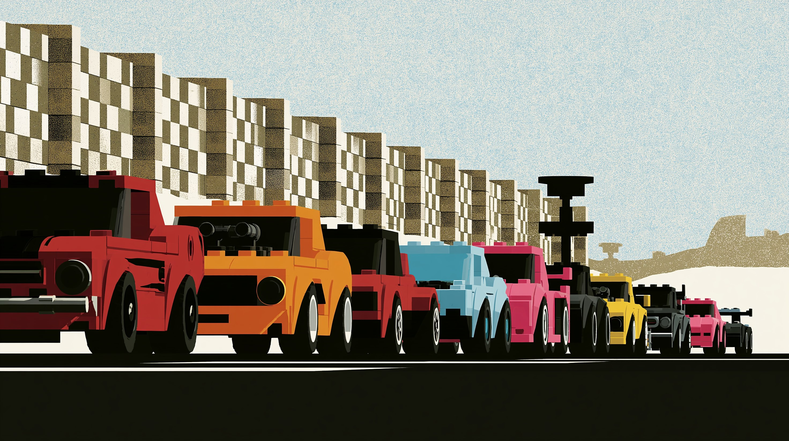

From pocket-sized model to full-scale build — every set starts the same way.
Vocabulary · Reading · Grammar · Speaking
Brick by Brick: Building Lego Cars
From a handful of coloured bricks to fully working supercars with real gears and steering — Lego has been engineering tiny automotive marvels for decades. In this lesson you'll build your vocabulary, read about how Lego designs its most famous car sets, practise the passive voice, and finish with some speaking practice of your own.
You will complete: 12 vocabulary questions, a short reading text with 6 comprehension questions, 8 grammar questions on the passive voice, and 4 speaking prompts.
Part 1 · Vocabulary
Key Building Vocabulary
Complete each sentence with the correct word. Read carefully — some options are close in meaning!
Part 2 · Reading
From Baseplate to Bugatti

Part 3 · Grammar Focus
The Passive Voice
We use the passive voice when the process or the result is more important than who performs the action — perfect for describing manufacturing and design.
Structure: subject + to be + past participle (e.g. "The bricks are produced in Denmark.")
Choose the correct passive form to complete each sentence.
Part 4 · Speaking Practice
Talk It Through
Speak your answers aloud — alone, with a partner, or record yourself. There are no right or wrong answers here.
1. Did you ever build with Lego (or similar toys) as a child? What did you enjoy building most?
2. Why do you think adults are increasingly interested in building Lego Technic supercars?
3. Describe the step-by-step process of building something you've made — using the passive voice where you can.
4. If you could design a Lego set of any vehicle, what would it be and why?
Part
Question 1 of 12
Results
Well Built!
0 / 26
You've covered essential vocabulary for describing how things are built, practised reading for detail, and reviewed the passive voice — a structure you'll hear constantly in manufacturing, engineering, and design contexts.